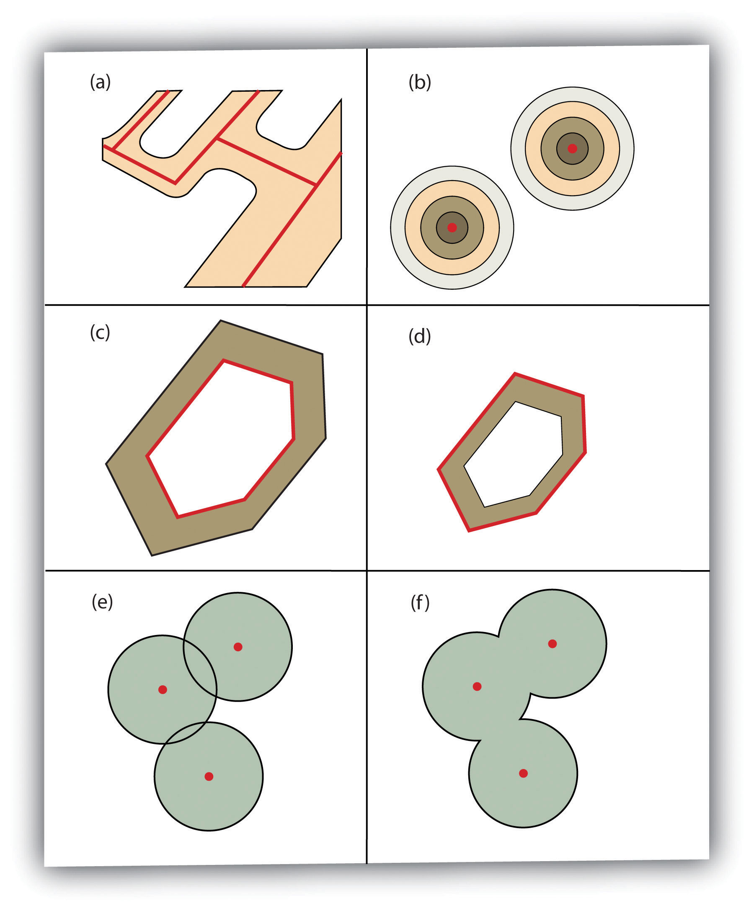
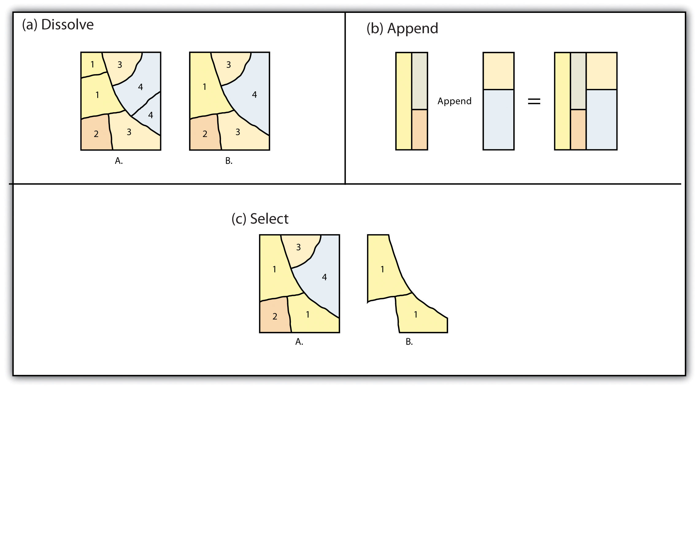

As the name suggests, single layer analyses are those that are undertaken on an individual feature dataset. BufferingPlacing a region of specified width around a point, line, or polygon. is the process of creating an output polygon layer containing a zone (or zones) of a specified width around an input point, line, or polygon feature. Buffers are particularly suited for determining the area of influence around features of interest. GeoprocessingAny operation used to manipulate spatial data. is a suite of tools provided by many geographic information system (GIS) software packages that allow the user to automate many of the mundane tasks associated with manipulating GIS data. Geoprocessing usually involves the input of one or more feature datasets, followed by a spatially explicit analysis, and resulting in an output feature dataset.
Buffers are common vector analysis tools used to address questions of proximity in a GIS and can be used on points, lines, or polygons (Figure 7.1 "Buffers around Red Point, Line, and Polygon Features"). For instance, suppose that a natural resource manager wants to ensure that no areas are disturbed within 1,000 feet of breeding habitat for the federally endangered Delhi Sands flower-loving fly (Rhaphiomidas terminatus abdominalis). This species is found only in the few remaining Delhi Sands soil formations of the western United States. To accomplish this task, a 1,000-foot protection zone (buffer) could be created around all the observed point locations of the species. Alternatively, the manager may decide that there is not enough point-specific location information related to this rare species and decide to protect all Delhi Sands soil formations. In this case, he or she could create a 1,000-foot buffer around all polygons labeled as “Delhi Sands” on a soil formations dataset. In either case, the use of buffers provides a quick-and-easy tool for determining which areas are to be maintained as preserved habitat for the endangered fly.
Figure 7.1 Buffers around Red Point, Line, and Polygon Features

Several buffering options are available to refine the output. For example, the buffer tool will typically buffer only selected features. If no features are selected, all features will be buffered. Two primary types of buffers are available to the GIS users: constant width and variable width. Constant width buffersRegions of constant width around points, lines, or polygons. require users to input a value by which features are buffered (Figure 7.1 "Buffers around Red Point, Line, and Polygon Features"), such as is seen in the examples in the preceding paragraph. Variable width buffersRegions of variable width around points, lines, or polygons., on the other hand, call on a premade buffer field within the attribute table to determine the buffer width for each specific feature in the dataset (Figure 7.2 "Additional Buffer Options around Red Features: (a) Variable Width Buffers, (b) Multiple Ring Buffers, (c) Doughnut Buffer, (d) Setback Buffer, (e) Nondissolved Buffer, (f) Dissolved Buffer").
In addition, users can choose to dissolve or not dissolve the boundaries between overlapping, coincident buffer areas. Multiple ring buffersMulitple concentric regions of a specified width around points, lines, or polygons. can be made such that a series of concentric buffer zones (much like an archery target) are created around the originating feature at user-specified distances (Figure 7.2 "Additional Buffer Options around Red Features: (a) Variable Width Buffers, (b) Multiple Ring Buffers, (c) Doughnut Buffer, (d) Setback Buffer, (e) Nondissolved Buffer, (f) Dissolved Buffer"). In the case of polygon layers, buffers can be created that include the originating polygon feature as part of the buffer or they be created as a doughnut bufferA buffer around a polygon feature that does not include the area inside the buffered polygon. that excludes the input polygon area. Setback buffersA buffer around a polygon feature that only extends inside of the polygon boundary. are similar to doughnut buffers; however, they only buffer the area inside of the polygon boundary. Linear features can be buffered on both sides of the line, only on the left, or only on the right. Linear features can also be buffered so that the end points of the line are rounded (ending in a half-circle) or flat (ending in a rectangle).
Figure 7.2 Additional Buffer Options around Red Features: (a) Variable Width Buffers, (b) Multiple Ring Buffers, (c) Doughnut Buffer, (d) Setback Buffer, (e) Nondissolved Buffer, (f) Dissolved Buffer
“Geoprocessing” is a loaded term in the field of GIS. The term can (and should) be widely applied to any attempt to manipulate GIS data. However, the term came into common usage due to its application to a somewhat arbitrary suite of single layer and multiple layer analytical techniques in the Geoprocessing Wizard of ESRI’s ArcView software package in the mid-1990s. Regardless, the suite of geoprocessing tools available in a GIS greatly expand and simplify many of the management and manipulation processes associated with vector feature datasets. The primary use of these tools is to automate the repetitive preprocessing needs of typical spatial analyses and to assemble exact graphical representations for subsequent analysis and/or inclusion in presentations and final mapping products. The union, intersect, symmetrical difference, and identity overlay methods discussed in Section 7.2.2 "Other Multilayer Geoprocessing Options" are often used in conjunction with these geoprocessing tools. The following represents the most common geoprocessing tools.
The dissolveA geoprocessing technique that removes the boundary between adjacent polygons with identical values. operation combines adjacent polygon features in a single feature dataset based on a single predetermined attribute. For example, part (a) of Figure 7.3 "Single Layer Geoprocessing Functions" shows the boundaries of seven different parcels of land, owned by four different families (labeled 1 through 4). The dissolve tool automatically combines all adjacent features with the same attribute values. The result is an output layer with the same extent as the original but without all of the unnecessary, intervening line segments. The dissolved output layer is much easier to visually interpret when the map is classified according to the dissolved field.
The appendA geoprocessing technique that combines adjacent polygon datasets into a single dataset. operation creates an output polygon layer by combining the spatial extent of two or more layers (part (d) of Figure 7.3 "Single Layer Geoprocessing Functions"). For use with point, line, and polygon datasets, the output layer will be the same feature type as the input layers (which must each be the same feature type as well). Unlike the dissolve tool, append does not remove the boundary lines between appended layers (in the case of lines and polygons). Therefore, it is often useful to perform a dissolve after the use of the append tool to remove these potentially unnecessary dividing lines. Append is frequently used to mosaic data layers, such as digital US Geological Survey (USGS) 7.5-minute topographic maps, to create a single map for analysis and/or display.
The selectTo define a subset of the larger set of data points or locales. operation creates an output layer based on a user-defined query that selects particular features from the input layer (part (f) of Figure 7.3 "Single Layer Geoprocessing Functions"). The output layer contains only those features that are selected during the query. For example, a city planner may choose to perform a select on all areas that are zoned “residential” so he or she can quickly assess which areas in town are suitable for a proposed housing development.
Finally, the mergeTo combine adjacent or overlapping spatial features into a single feature. operation combines features within a point, line, or polygon layer into a single feature with identical attribute information. Often, the original features will have different values for a given attribute. In this case, the first attribute encountered is carried over into the attribute table, and the remaining attributes are lost. This operation is particularly useful when polygons are found to be unintentionally overlapping. Merge will conveniently combine these features into a single entity.
Figure 7.3 Single Layer Geoprocessing Functions
